kinput2 -canna &で再起動かけるだけで解決することが判明）。 以上諸々の理由でKDE2を止めて、昔取った杵柄「FVWM」へ戻ることにしました。
そもそもFVWMとは何か、から話さなくてはならない。FVWMとはLinux/UNIXの世界で言う「ウインドウマネージャ」と呼ばれる類のプログラムである。いや、「類」などではなくそのものだ。「ウインドウマネージャ」とは何かを話す前に、UNIX世界でのウインドウ、ひいてはグラフィック処理について知っている限りでざっと説明する。
そもそもUNIX世界にはグラフィック処理など存在しなかった。が、必要だった。というわけでとりあえず「線を引いたり、四角を書いたり、文字を描く」為に必要な最低限度の機能を持ったサーバープログラム「X」（エックス）が作られた。これがLinux/BSDで言うところの XFree86 である（以下、私自身がLinuxユーザーなのでLinux/BSD/UNIXを一くくりにLinuxと言ってしまう）。何でUNIXが入っていないかというと、Solaris等の商用UNIXでは"Free"ではないからだ。それらには、有償のXサーバーが同梱されていた。XFree86とはそれをフリーで実装し直したXサーバーと言ってまあ間違ってないんじゃない？
しかしこのプログラムは、グラフィックを扱うための最低限度の機能しかマジに提供していない。タイトルバーだの、メニューだのを描画したりマウスクリックを処理するのはあくまでも、プログラマーの役目だった。そしてウインドウという物を作り、複数のウインドウをマウスクリックで切り替える処理も。
というわけで、タイトルバーを作ったりメニューバーを描画したりするための専用プログラムが生まれた。複数のウインドウを操作するためのプログラム、すなわち「ウインドウマネージャ」である。これによりプログラマーは余計なことに気を遣わずに済み、ユーザーもマルチウインドウでハッピーになった。
これがここ１５年間の内、最初の１０年間程度の話。この間に「FVWM」「WindowMaker」「AfterStep」「twm」「qvwm」「mlvwm」「Enlightment」など数多のウインドウマネージャが生まれた。やがてウインドウを単に管理するだけではなく、画面に表示された「デスクトップ」との連携（ドラッグ＆ドロップ）をはじめとし、その他雑多なユーティリティをまとめて同梱した巨大な「デスクトップマネージャ」と呼ばれる二強が生まれた。言わずもがな、「KDE」と「GNOME」である。
後半５年間、Linux/BSD界における「ウインドマネージャ」の一般的な選択は先の二つ、「KDE」と「GNOME」のどちらをとるのかという選択に帰着していた。が、それは昔ながらのウインドウマネージャ達の終焉と同義では無かったのだ。
商用UNIXではソフトウェア的な制限が厳しく、「デスクトップマネージャ」をコンパイル・インストールするのが難しい場合が多々ある。そして「デスクトップマネージャ」は総合・統合環境を提供するだけあり、マシンリソースをかなり食う。そうそう見栄えが良いからとデスクトップマネージャを導入し、サーバーマシンに無理させることはできない。その点、「ウインドウマネージャ」は違う。Xの初期から存在していた老舗のWM群は出発点が「UNIX/Linux/BSD」というマルチプラットフォームであり、「あくまでもウインドウマネージャであり、デスクトップマネージャではない。」という姿勢をかたくなに維持していた。そのため動作自体はずっと軽快で、マシンにも負担をかけずに済む。結果、昔からのUNIX鯖などでしぶとく。しかし確実にWM達は生き残ってきた。
彼らは確かに現在のLinux界から見れば少数派である。ギガヘルツ＋数百MBのメモリが当然な昨今のPC環境において、個人があえてデスクトップマネージャではなく単なるウインドウマネージャを選択する必要は無い。
だが、しかし。それでもウインドウマネージャの出番となるシーンは存在する。ノートPCなど明らかにスペック不足なマシンでXを走らせるときだ。そんな時、日頃KDEやらGNOMEに慣れきったLinuxユーザーは初めて「ウインドウマネージャ」にさわり、困惑する。
元々ウインドウマネージャが生き延びてこれたのは熱狂的なマニアによる支援と、そして商用UNIX/BSDにおける独特のWMの見栄えに関する伝統が背景にある。Motif,CDEと呼ばれる一連のGUI、そしてWindowMakerが築き上げてきたルック＆フィール。しかしこれらは、「Windows系の操作性」を目指してきた「デスクトップマネージャ」とは異質な世界でもある。操作性、カスタマイズ性、カスタマイズ方法、その他全てが。
だが諦めないでほしい。彼らは決して近づかれることを拒絶しているわけではない。UNIX/BSD界で言えることだが、垣根は常に人間の方に存在する。我々は少し視点を変えるだけでその垣根を取り除き、新しいおもちゃを手に入れることができる。
昨今、ウインドウマネージャ、それも比較的古参に入る「FVWM」に挑戦しようとする、今これを読んでいる読者達の事だ。既にBSDのユーザーであったり、Emacs/vi系を手足の如く操作することを夢想し、果敢にも挑戦する探求者であると信じている。そうした連中にとってデスクトップマネージャは必ずしも絶対条件ではない。私も含めてデスクトップマネージャが無いからと言って困る事はない。事実私は困っていない。私やそうした連中にとって必要なユーティリティやソフトはこれぐらいだろう・・・vi, Emacs, XEmacs, MidnightCommander(mc), w3m, Mozilla, xosview, gimp, rxvt等の各種Xターミナル。
このうち、デスクトップマネージャでなければ動かせない、或いは連携できないソフトは一つとしてない。いずれも単体で動き、ひどく切れ味の鋭いツールばかりだ（故に最初は取っつきにくい）。「コンソールさえあればよい」という境地に至った人間はXターミナルとEmacs, vi さえあればいかなる窮地でも困ることは無いだろう。
故に私は確信する。そういった境地に挑もうとする探求者であるなら、必ず、ウインドウマネージャを手足の如く動かし全く不自由を感じない環境を構築できる、と。だが何事にも舵取り役は必要だ。他のWMは知らないが、FVWMに関しては日本語ドキュメントのほとんどが「FVWM 1.x」系列を扱っていて最新の「FVWM 2.5.x」系列を扱っているところが見受けられない。WMを勉強するとき参照するのは、大概は本家の英語ドキュメントであるしそれが最良かつ最短である。しかし結構特殊な単語が使われていたりして理解に時間を費やすことがままある。私は、FVWM 2.5.x 系列で提供されているテーマを独自にカスタマイズした「esox」と呼ばれる一連の設定ファイルとアイコン群をもって、それらの理解を少しでもサポートしたいと考えている。
「esox」は Mac OS X を参考にした「テーマ」から必要部分を切り出し、不必要な部分を削り、最終的にFVWMのソースコードの一部を勝手に改造することによって相当使い勝手と見栄えを（少なくとも私にとって）向上させたチューニングだ。
そして実は、結構異端なチューニングでもある。友人知人によく言われるのだが、私のセンスや衝動、欲求感覚は平均的なそれと大きくずれているらしい。後述するが、この「esox」は他の多くのウインドウマネージャ使いのチューニングとはかなり雰囲気がずれている。まあそれは実際の画面を見ていただくとして・・・さあ、そろそろ本題にはいるとしよう。
とりあえず先にスクリーンショットをお見せし、読者のモチベーションを高めておきたい。FVWMは何も古いだけではない。悪魔的なカスタマイズ性を秘めている。その証拠の一片ともなれば幸いだ。
まずは起動画面をお見せする。中央に表示されているのは「FvwmBanner」といわれる機能で、指定秒数だけ画面中央に画像を表示する。画像自体はFVWMの公式ページで、ロゴマークのコンペが行われていたのでそこから気に入ったのをとってきただけである。
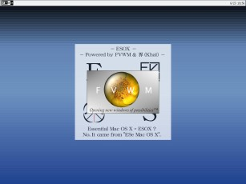
これが通常画面と背景画像である。情けないことだが、背景画像の表示にはBlackboxのbsetbgを使わせてもらった。背景画像は「テーマ」のMac OS X 風味から背景画像をキャプチャし、適当に加工した。
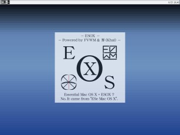
いわゆる「スタートメニュー」である。KDE2に合わせ、Alt+F1で表示されるように調整してある。興味深いことに、vi式カーソル移動(h:←, j:↓, k:↑, l:→)が利用できる。これによりマウスレスでもアプリケーションの起動やWMの制御に困ることは無い。アイコン群はKDEのアイコンから適当に引き抜いてきた。右サイドに三角マークがあるのは、サブメニューが展開される。ここらあたりはどのWMも、WindowsもKDEもGNOMEも一緒だろう。
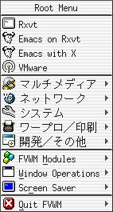
こちらはウインドウ操作メニュー群。ウインドウがアクティブなとき、Alt+Spaceを叩くと画面中央に表示されるようにしてある。このキーバインドはWindowsに準拠。Move, Resizeともにカーソルキーで扱えるので、ここでも基本的にマウスレスが可能。
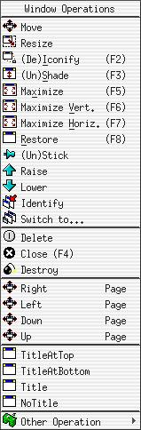
こちらはFVWMのモジュールを扱うためのサブメニュー。「TaskBar」というのが画面上部のバーのこと。「Animation」というのは「FvwmAnimation」モジュールで、これを利用すると相当クールなアイコン化(Iconify)、アイコンからの復帰(Deiconify)が簡単に利用できる。本来は他にも大量にモジュールがあるし、便利でもあるのだがなぜこれだけしかメニューにないかというと、Consoleがあるからである。これは「FvwmConsole」というモジュールで、ここからあらゆるFVWMコマンドやモジュールの呼び出しが行える。従ってFvwmConsoleさえあれば良い（←どうもこういったセンスが異端呼ばわれしている原因らしい）。つうか、実際問題このサブメニューが必要になるのは誤ってTaskBarを消してしまったとき位。
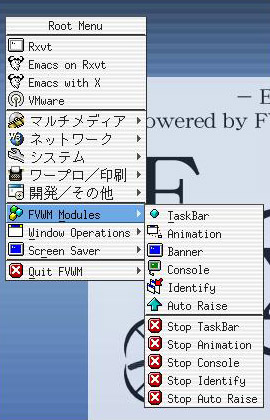
これが通常利用時の画面上部、「TaskBar」。Windowsとさして変わりません。左のロゴマークをクリックすると、先ほどのスタートメニューが表示される。灰色で表示されているボタン（というかアイコン）はアイコン化されたウインドウ。アクティブなウインドウは黒い枠で囲まれる（この次のイメージを参照）。右側は時計。
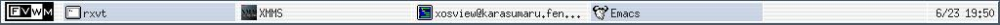
「TaskBar」（FvwmTaskBarモジュール）は本来3Dボタンしか描画できない。どうしても「影」の部分や、「盛り上がって光が当たっている」部分を描画してしまう。そしてその描画位置は、どう頑張ってカラー設定を施しても3Dになってしまうような描画位置だった。というわけで、FvwmTaskBarモジュールのソースコードを改造して、無理矢理フラットなボタンを描画するように直したのがesoxのウリの一つ。
監視モードで通常使用モードな画面。Mozillaがタイトルバーだけになっています。実はこの「タイトルバーだけ」というのが最初は慣れないし、しかもタイトルバーをクリックしたときのデフォルトになっていたりするので嫌がるのですが。慣れてしまえば却ってかっこうよく見える始末。アニメーションもしてくれるので、気持ちよいです。Konquerorのデフォルトの銀白色のカラーと良くマッチしていませんか？XMMSの方も、Skinを調整してMacOSXのAquaに合わせました。
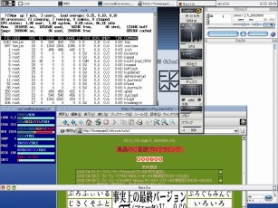
なお、esoxのスタートメニューに登録してあるプログラムですが「Emacs」「VMware」「Acrobat」を除いてTurboLinux workstation 8をフルインストールすれば入ってくるものばかりです。
「Emacs」はGnuからコンパイルしたPATH設定に合わせてあります。「Acrobat」のインストールはTLXW8のオンラインHTMLマニュアルに載っている通りです。「VMware」は3.2をrpmインストールしたPATHに合わせてあります。
いずれも、menus設定ファイルにまとめてありますので自由に書き換えることができます。
FVWMの特徴（なぜFVWMか）とインストール方法
「本題」に戻る
FVWMの特徴をお話しする前に、なんでFVWMかをば。
最初の最初・・・初めてWMにFVWMを使った理由は、「設定が一番簡単そう」だったから、です。よーするに、私は設定が依存しまくったシステムは嫌いなんです。偉そうなことイッテマスが結局私の頭のキャパを超えてしまうんです。AfterStepとか、Enlightmentとかそういった派手な設定が可能なタイプは。
あと魅力的だったのが、FVWMならではの「ページャ」「デスクトップ」移動。そこら辺は前回のFVWMカスタマイズにて紹介してますが、この機能はFVWMだけ（だったと思う）です。こういった機能が私の心のツボを突いてきました。
実際にこれがどういう機能かというと・・・設定によって、画面を四つ分使える用になります。それだけならKDEでも同じですが、画面と画面の中間点を移動できたりしちゃえます。こんな感じに。
| 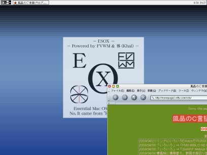 | 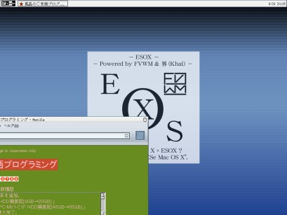 |
| 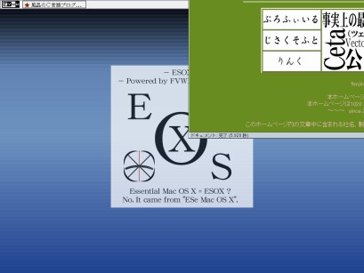 | 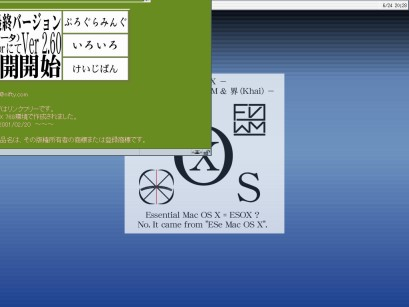 |
# whereis fvwm /usr/bin/fvwm # rpm -qf /usr/bin/fvwm fvwm-2.4.6-05 # rpm -e fvwm-2.4.6-05こんな感じで。もしX関連の依存性が報告されても、rpm -e --nodeps で強制消去して大丈夫だと思います。RHLの場合は（今はどうだか知りませんが）startxに続く一連のスクリプト内でフェールセーフの選択肢に必要とされているのかもしれません。ので、無視してください。
$ ./configure $ make $ su -c make installして下さい。configureオプションはとりあえず何も指定しなくても、問題なく日本語表示とかできます。
テーマ（FvwmTheme）のインストールと利用方
「本題」に戻る
「FVWM Themes」の公式HPはこちらです。ここの「Read FAQ」とか「Documentation」辺りを読んでインストールして下さい。
具体的なインストール方法は忘れました。ごめんなさい。
利用方法だけ説明します。「テーマ」とは、統一されたルック＆フィールを提供するためのいわば「設定ファイルとアイコン、画像集」の事です。FvwmThemeモジュールを利用することにより、システムにインストールされた「テーマ」を切り替える事ができます。
FvwmThemeを使って「テーマ」を利用した場合、メニューに「テーマ」を取捨選択するための「ThemeModules」みたいなメニュー項目が表れます。ここから、各「テーマ」で使われているFVWMのパーツに対するカスタマイズをつぎはぎできます。「テーマ」は一枚岩で作られているわけではなく、「ボタンの見栄え」「メニューのグラデーション」「タイトルバーの背景」などそれぞれ分離した形で統合されています。逆に言えば、「メニューのグラデーションはこのテーマからいただいて、タイトルバーのボタンや背景画像はこのテーマからいただいて」といった事が可能です。
しかし複雑なシステムは設定の美しさを（ある程度）損ないます。ぶっちゃけた話、メニューがうざい。使わないモジュールだの、テーマメニューが並ぶ。使いもしないツールが登録されている。しかもどこに設定があるのか分からず、修正が面倒くさい。そのままの状態では勉強にさえならない。
救いはあります。FVWM Themesには、現在使用しているテーマ（の組み合わせ）を通常のfvwmが読み込める「.fvwm2rc」設定ファイル形式に書き出す事のできるツールがあります。
というわけで、とりあえず自分の好きな要素をテーマから拾い集めて下さい。私の場合は基本的なルック＆フィールに「OSX」を。タスクバーのカスタマイズの参考にタスクバー部分を「Redmond98」から付け足しました。フォント回りは「Default」です。あとFvwmAutoRaiseやらその辺のウインドウの操作挙動は「Olicha」からいただいたような気が・・・。
最終的にはそれらを組み合わせるので、今は完全なモノを目指さなくても大丈夫です。とにかく、使えそうな「要素」だけを拾い集めます。
で、拾い集め終わったら「.fvwm2rc」設定ファイルに書き出します。FVWM Themesに含まれている、「fvwm-themes-config」を利用します。
$ fvwm-themes-config --expand-rc $HOME/.fvwm/fvwm-themes-rcといった具合です。以降、この設定ファイルをいろいろといじくって最終的な「.fvwm2rc」設定ファイルを仕上げていきます。
何か面倒くさくなってきました。とりあえず作った設定ファイル群を、適当にコメントつけときましたのでそっち眺めてみて下さい。怠け者で本当に申し訳ない。文字コードはEUC-JPです。
というわけでいよいよです。が・・・実はesoxではデフォルト背景画像の貼り付けにBlackboxのbsetbgというツールを使っています。Blackboxの公式HPから最新版でも何でも良いのでダウンロードしてきて、適当にコンパイルしてインストールしちゃって下さい。configureオプションはどうでも良いです。bsetbgが欲しいだけなので。make, make installで普通に /usr/local/bin にbsetbgができるはずです。
試しにfvwmを起動した状態で、rxvt辺りから「bsetbg 適当なXPM画像」をしてみて下さい。背景画像に読み込まれればオッケー。
esoxはここから入手できます。ダウンロードしてきたら以下の手順で展開して下さい。念のため、以前の.fvwm2rcファイルはバックアップして置いてください。
$ cd ~ $ ls ... esox_v1.0.tar.gz ... $ mv esox_v1.0.tar.gz ~/.fvwm/ $ cd ~/.fvwm/ $ tar zxvf esox_v1.0.tar.gz ... ... ... $ la ... .fvwm2rc ... esox/ ... esox_v1.0.tar.gz ...ここまでがesoxの設定ファイルと、各種アイコンの解凍・展開・配置です。
$ cd esox/ $ ls ButtonArray.c bindings images/ menus $ cp ButtonArray.c ~/download/fvwm-2.5.7/modules/FvwmTaskBar/「download」ディレクトリは要するにfvwm-2.5.7を解凍したディレクトリのことで、これは個人個人によって変わってきます。要は、fvwm-2.5.7のソースツリー中のmodules/FvwmTaskBarディレクトリへ esox のButtonArray.cを上書きコピーすれば良いわけです。
$ ls ... ButtonArray.o ... Makefile ... FvwmTaskBar* ... $ make clean (rm して消してます・・・) $ make ... (コンパイル中) ... $ ls ... FvwmTaskBar* ...コンパイル時にエラーが出てしまった人は、エラーの内容とfvwmのバージョンを風晶までメールで知らせて下さい。無保障ですが、なんとか考えてみます。
$ su -c "cp FvwmTaskBar /usr/local/libexec/fvwm/2.5.7/"「/usr/local」部分はインストール先によって変わります。まあ・・・大概は/usr/local/だと思いますし。とにかく、インストール先のFvwmのモジュールが置かれているディレクトリへコピーし、以前のFvwmTaskBarを新しい方に上書き置換します。
リンクです。つっても、今回はマジでFVWM公式HPとBlackbox公式HPしかありません。
最後に、esoxを作った時のカスタマイズに関する基本方針をつらつら書いていきたいと思います。
まず、余計なモジュールは起動しない。メニューからも削除する。というのはFvwmButtonは確かに便利なんですが、設定が面倒くさい。しかもFvwmTaskBarを使ってMacOSX風の外見にしたのをある意味「ぶちこわし」にしてくれるモジュールなんですよ、これ。他にもFvwmIconManとかIconBoxも削除。これ、アイコンが大きいので「ダサイ」んです。みていられない。そもそも、大体をrxvtとかのターミナルで過ごすような場合、デスクトップにアイコンが置いて無くてもなんら困らないわけです。私がKDEでデスクトップアイコンを使う用途は、せいぜいUSBのMOのマウント位です。
とにかくMacOSX風にしたんです。思い切って不要なモジュールは隠してしまいました。画面を移動したり、デスクトップやページを切り替えるFvwmPagerも止めてしまいました。元々私は複数デスクトップを使うタイプではないんです。Windowsに慣れていたので、シングルデスクトップでも十分でした。ので、要らないのでFvwmPagerも削除、デスクトップも一枚の中に2x2で区切り、CtrlとAltとShiftの組み合わせで移動できるだけにしてしまいました。
あと、ウインドウ操作メニューも一つにまとめてしまいました。OSXテーマだと、二、三種類の操作メニューがあってタイトルバーやタイトルバー右のボタンをクリックした場合に応じていろいろ表示するのですが・・・はっきり言って、邪魔。「どこをどのボタンでクリックすればいいのか覚える必要がある」何て、邪魔も良いところです。面倒くさい。それほどヘビーに使う予定もないのですから、不必要なグループ単位での移動だの、Iconifyだのは要りません。
rxvtやxtermを通したヘルプメニューもテーマをインストールすると付いてきましたが・・・んなもん、Web上に存在するしrxvt一つか二つ開いておけばそれで済みます。ので、やっぱ削除。
とにかく、ある機能を実行するための「入り口」をなるべく減らしておきたかった訳です。ターミナル上で動くソフトはメニューにはなるべく登録しない。
入り口がいっぱいあると、いちいち覚えておかなくてはならないからです。入り口は一つか二つ、そこからツリーを辿っていけば実行できる。その程度で十分です。
実際にFVWM Themesで紹介されているスクリーンショットと、私のesoxスクリーンショットとの間には溝が存在します。まず私はFvwmButtonを全く使っていません。次にXeyesも無視、XClock系列も無視、FvwmPagerも無視、IconBox, IconManも無視。
UNIX界で長く使われてきたWMのインターフェイスやXユーティリティを徹頭徹尾無視してきています。つまり、esoxのカスタマイズはWindows寄りなのです。元々Windowsユーザーの私にとって、太いウインドウ境界線だのダサイ白黒な時計だのショートカットだか何だか良く分からず、アイコンのデザインもいまいちなFvwmButtonsを使ったWindowMakerのWharfもどきなどは耐えられない。MacOSX風の美しいTaskBar,メニューを壊さないで欲しい。結局、そういうことです。あと・・・配色もぱっとしないのが多いんですよね。
WindowsやMacの配色は明るくてぱりっとしたのが多いし、私も好きです。ところがUNIX界のWMでは、大体のデフォルトは地味すぎるほど地味だったり、褪せた感じのする配色だったり、メタルでヘビーでブラックな感じが多かったりして。重苦しい。見づらい。カラーリングに民族レベルの差異を感じ取ってしまうのです。
私は淡い色合いが好きな方なので、どうもWMのテーマは・・・格好良い、とは思うんですが・・・自身としてはやりたくないかな。という感じです。
その点、MacOSXのGUIは大好きですね。でこぼこ感を抑えて、コントラストを抑えてフラットな感じのあれは野暮ったくも無し、どぎつくも無し。とにかく派手な見た目はなるべく抑えて、シンプルだけどそれ故に他とはずれまくった設定で、基本を踏襲していれば何も困ることがなく、満たされた感じを覚える環境・・・って、Cetaと同じ境地を目指してるだけかい！？
やっぱり、私のセンスはずれにずれまくっているみたいです。あ～あ。
というところで、そろそろお仕舞いです。断言します。esoxのカスタマイズは、文句なく「異端」なカスタマイズです。しかしWindowsやMac系のユーザにとっては、比較的違和感なく入っていけるかもしれません。とにかく、これを参考に非力PCでもばりばりFVWMを使って快適な作業環境を構築して頂ければ作者（というかカスタマイズ）冥利に尽きます。それでは今回はこの辺で。